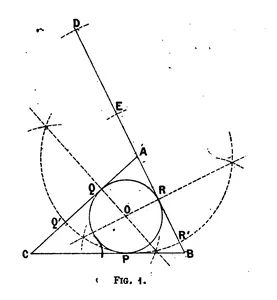
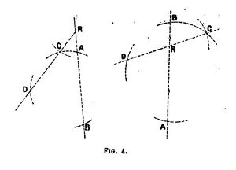
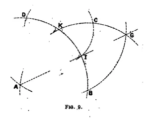

Part III: Circles, Tangency, Proportions & Projective Geometry¶
La Géométrographie (Pau 1892 / Paris 1893, pp. 15–36) — Problems XXVII–XLVIII (FIGS. 1–9)
Incircle and excircles (FIG. 1), capable circular segment (FIG. 2), common tangents & centers of similitude (FIG. 3), proportional segments (FIGS. 4–5), mean proportionals (FIGS. 6–7), 1-line Golden Section (FIG. 8), inversion, polarity, radical axes, harmonic conjugates, Catalan’s square (FIG. 9), and Chasles’s ellipse axes.
Outline of Part III¶

Problem XXVII: Inscribe a Circle in a Given Triangle ABC
XXVII. — Inscribe a circle in a given triangle ABC.

Problem XXVIII: Circular Segment Capable of a Given Angle
XXVIII. — To construct upon a given straight line AB a segment capable of a given angle EGD.

Problem XXIX: Common Tangents to Two Circles
XXIX. — To construct the common tangents to two given circumferences O and O.
Problems XXX–XXXII: Segment Division & Parallels
XXX. — To construct a straight line CD that is \(n\) times a given length AB: 1° without marking the intermediate divisions; 2° marking the divisions.

Problems XXXIII–XXXIV bis: Fourth & Third Proportionals
XXXIII. — To construct the fourth proportional X to three given straight lines \(M, N, P\); \(X = \frac{N \cdot P}{M}\), or: To divide a length P proportionally to two given lengths M and N.

Problem XXXV: Mean Proportional Between Two Segments
XXXV. — Construct the mean proportional between two given straight lines \(M\) and \(N\), \(X^2 = M \cdot N\).

Problems XXXVI–XXXVII: Golden Section & Inaccessible Intersections
XXXVI. — Divide a straight line AB in extreme and mean ratio.
Problems XXXVIII–XLVI: Inversion, Polarity, Radical Axis & Harmonic Conjugates
XXXVIII. — Locate the point \(A'\) reciprocal to a given point \(A\) with respect to a given circle of radius \(R\) and center \(O\).

Problems XLVII–XLVIII: Catalan’s Square & Axes of an Ellipse
We shall complete this study with a few applications chosen somewhat at random and a few remarks that will enable the reader to understand better the spirit and, I hope, the usefulness of our method.